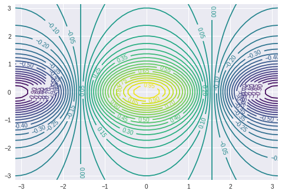
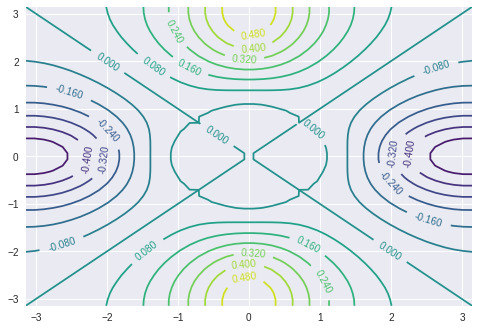
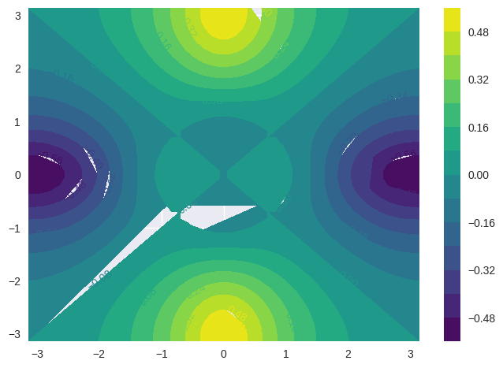
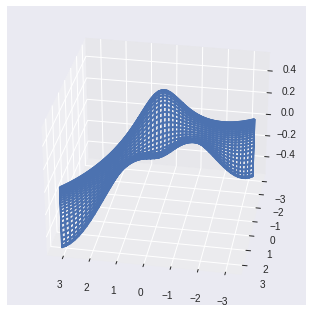
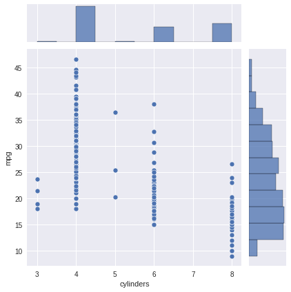
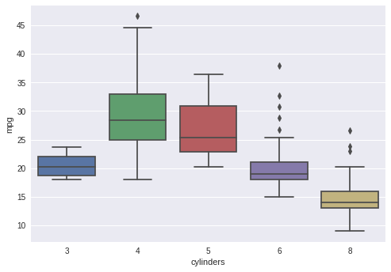
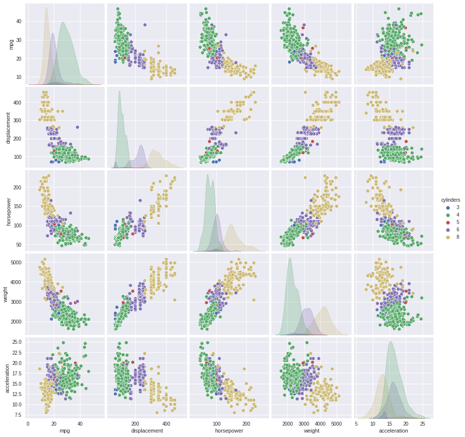

2.3.1 Basic Commands¶
# imports and setup
import numpy as np
from scipy.stats.stats import pearsonr
import seaborn as sns
import matplotlib
import matplotlib.pyplot as plt
from mpl_toolkits.mplot3d import Axes3D # for 3D plots
import math
import pandas as pd
%matplotlib inline
pd.set_option('precision', 2) # number precision for pandas
plt.style.use('seaborn') # pretty matplotlib plots
# array creation
x = np.array([1, 6, 2])
y = np.array([1, 4, 3])
len(x), len(y)
(3, 3)
# array operations
x + y
array([ 2, 10, 5])
# matrix creation
x = np.asmatrix(np.arange(1, 5).reshape(2, 2).transpose())
x
matrix([[1, 3],
[2, 4]])
#matrix operations
np.power(x, 2)
matrix([[ 1, 9],
[ 4, 16]])
# random normal distribution & correlation
x = np.random.normal(size=50)
y = x + np.random.normal(loc=50, scale=.1, size=50)
pearsonr(x, y)[0]
0.9943353192858625
# random seed and basic statistical functions
np.random.seed(3)
y = np.random.normal(size=100)
y.mean(), y.var(), np.sqrt(y.var()), y.std()
(-0.10863707440606224,
1.132081888283007,
1.0639933685333791,
1.0639933685333791)
2.3.2 Graphics¶
x = np.random.normal(size=100)
y = np.random.normal(size=100)
# seaborn scatterplot
p = sns.jointplot(x, y, kind='scatter')
p.set_axis_labels(xlabel='x axis', ylabel='y axis');
/opt/hostedtoolcache/Python/3.8.12/x64/lib/python3.8/site-packages/seaborn/_decorators.py:36: FutureWarning: Pass the following variables as keyword args: x, y. From version 0.12, the only valid positional argument will be `data`, and passing other arguments without an explicit keyword will result in an error or misinterpretation.
warnings.warn(
# create a sequence of numbers
x = np.arange(1, 11)
x
array([ 1, 2, 3, 4, 5, 6, 7, 8, 9, 10])
# linearly spaced numbers
x = np.linspace(-np.pi, np.pi, num=50)
x
array([-3.14159265, -3.01336438, -2.88513611, -2.75690784, -2.62867957,
-2.5004513 , -2.37222302, -2.24399475, -2.11576648, -1.98753821,
-1.85930994, -1.73108167, -1.60285339, -1.47462512, -1.34639685,
-1.21816858, -1.08994031, -0.96171204, -0.83348377, -0.70525549,
-0.57702722, -0.44879895, -0.32057068, -0.19234241, -0.06411414,
0.06411414, 0.19234241, 0.32057068, 0.44879895, 0.57702722,
0.70525549, 0.83348377, 0.96171204, 1.08994031, 1.21816858,
1.34639685, 1.47462512, 1.60285339, 1.73108167, 1.85930994,
1.98753821, 2.11576648, 2.24399475, 2.37222302, 2.5004513 ,
2.62867957, 2.75690784, 2.88513611, 3.01336438, 3.14159265])
x = np.linspace(-np.pi, np.pi, num=50)
y = x
# simulating R outer function
def pf(a, b):
return math.cos(b) / (1 + a**2)
f = np.empty((len(x), len(y)))
for i in range(len(x)):
for j in range(len(y)):
f[i,j] = pf(x[i], y[j])
# contour plot
cp = plt.contour(x, y, f, 45, cmap='viridis')
plt.clabel(cp, inline=1, fontsize=10);

# contour 2
fa = (f - f.transpose())/2
cp = plt.contour(x, y, fa, 15, cmap='viridis')
plt.clabel(cp, inline=1, fontsize=10);

# heatmap
cp = plt.contourf(x, y, fa, 15, cmap='viridis')
plt.clabel(cp, inline=1, fontsize=10)
plt.colorbar();

# 3d perspective
fig = plt.figure()
ax = fig.add_subplot(111, projection='3d')
ax.plot_wireframe(x, y, fa, cmap='viridis')
ax.view_init(30, 100);

2.3.3 Indexing Data¶
# matrix creation (R equivalent of matrix(1:16, 4 ,4))
A = np.asmatrix(np.arange(1, 17).reshape(4, 4).transpose())
A
matrix([[ 1, 5, 9, 13],
[ 2, 6, 10, 14],
[ 3, 7, 11, 15],
[ 4, 8, 12, 16]])
A[1, 2]
10
# list selections needs explicit row repetition for multiple columns
A[[[0, 0], [2, 2]], [1, 3]]
matrix([[ 5, 13],
[ 7, 15]])
# select a range of rows and columns
A[0:3, 1:4]
matrix([[ 5, 9, 13],
[ 6, 10, 14],
[ 7, 11, 15]])
# select a range of rows and all columns
A[0:2,:]
matrix([[ 1, 5, 9, 13],
[ 2, 6, 10, 14]])
# select all rows and a range of columns
A[:,0:2]
matrix([[1, 5],
[2, 6],
[3, 7],
[4, 8]])
# shape of the matrix
A.shape
(4, 4)
2.3.4 Loading Data¶
# read csv data with pandas into dataframe, explicitly setting na_values.
# pandas read_xxx functions infer datatypes, headers, dates, etc.
# without explicit declarations
Auto = pd.read_csv('../datasets/Auto.csv', na_values=['?'])
Auto
| mpg | cylinders | displacement | horsepower | weight | acceleration | year | origin | name | |
|---|---|---|---|---|---|---|---|---|---|
| 0 | 18.0 | 8 | 307.0 | 130.0 | 3504 | 12.0 | 70 | 1 | chevrolet chevelle malibu |
| 1 | 15.0 | 8 | 350.0 | 165.0 | 3693 | 11.5 | 70 | 1 | buick skylark 320 |
| 2 | 18.0 | 8 | 318.0 | 150.0 | 3436 | 11.0 | 70 | 1 | plymouth satellite |
| 3 | 16.0 | 8 | 304.0 | 150.0 | 3433 | 12.0 | 70 | 1 | amc rebel sst |
| 4 | 17.0 | 8 | 302.0 | 140.0 | 3449 | 10.5 | 70 | 1 | ford torino |
| ... | ... | ... | ... | ... | ... | ... | ... | ... | ... |
| 392 | 27.0 | 4 | 140.0 | 86.0 | 2790 | 15.6 | 82 | 1 | ford mustang gl |
| 393 | 44.0 | 4 | 97.0 | 52.0 | 2130 | 24.6 | 82 | 2 | vw pickup |
| 394 | 32.0 | 4 | 135.0 | 84.0 | 2295 | 11.6 | 82 | 1 | dodge rampage |
| 395 | 28.0 | 4 | 120.0 | 79.0 | 2625 | 18.6 | 82 | 1 | ford ranger |
| 396 | 31.0 | 4 | 119.0 | 82.0 | 2720 | 19.4 | 82 | 1 | chevy s-10 |
397 rows × 9 columns
Auto.shape
(397, 9)
# dropping rows (axis-0) where there are NA values (inplace)
Auto.dropna(axis=0, inplace=True)
Auto.shape
(392, 9)
# get column names of the dataframe
list(Auto.columns)
['mpg',
'cylinders',
'displacement',
'horsepower',
'weight',
'acceleration',
'year',
'origin',
'name']
# seaborn scatterplot
pl = sns.jointplot(x='cylinders', y='mpg', data=Auto);

# changing data type of a column into category
Auto['cylinders'] = Auto['cylinders'].astype('category')
Auto
| mpg | cylinders | displacement | horsepower | weight | acceleration | year | origin | name | |
|---|---|---|---|---|---|---|---|---|---|
| 0 | 18.0 | 8 | 307.0 | 130.0 | 3504 | 12.0 | 70 | 1 | chevrolet chevelle malibu |
| 1 | 15.0 | 8 | 350.0 | 165.0 | 3693 | 11.5 | 70 | 1 | buick skylark 320 |
| 2 | 18.0 | 8 | 318.0 | 150.0 | 3436 | 11.0 | 70 | 1 | plymouth satellite |
| 3 | 16.0 | 8 | 304.0 | 150.0 | 3433 | 12.0 | 70 | 1 | amc rebel sst |
| 4 | 17.0 | 8 | 302.0 | 140.0 | 3449 | 10.5 | 70 | 1 | ford torino |
| ... | ... | ... | ... | ... | ... | ... | ... | ... | ... |
| 392 | 27.0 | 4 | 140.0 | 86.0 | 2790 | 15.6 | 82 | 1 | ford mustang gl |
| 393 | 44.0 | 4 | 97.0 | 52.0 | 2130 | 24.6 | 82 | 2 | vw pickup |
| 394 | 32.0 | 4 | 135.0 | 84.0 | 2295 | 11.6 | 82 | 1 | dodge rampage |
| 395 | 28.0 | 4 | 120.0 | 79.0 | 2625 | 18.6 | 82 | 1 | ford ranger |
| 396 | 31.0 | 4 | 119.0 | 82.0 | 2720 | 19.4 | 82 | 1 | chevy s-10 |
392 rows × 9 columns
# seaborn boxplot implementation
sns.boxplot(x='cylinders', y='mpg', data=Auto);

# seaborn enhanced histogram with density plot
sns.distplot(Auto['mpg'], bins=15);
/opt/hostedtoolcache/Python/3.8.12/x64/lib/python3.8/site-packages/seaborn/distributions.py:2619: FutureWarning: `distplot` is a deprecated function and will be removed in a future version. Please adapt your code to use either `displot` (a figure-level function with similar flexibility) or `histplot` (an axes-level function for histograms).
warnings.warn(msg, FutureWarning)
# seaborn pairplot for selected variables, colored by another
sns.pairplot(Auto, vars=['mpg', 'displacement', 'horsepower', 'weight', 'acceleration'], hue='cylinders');

# summary statistics for all dataframe columns, including non-numerical ones
Auto.describe(include='all')
| mpg | cylinders | displacement | horsepower | weight | acceleration | year | origin | name | |
|---|---|---|---|---|---|---|---|---|---|
| count | 392.00 | 392.0 | 392.00 | 392.00 | 392.00 | 392.00 | 392.00 | 392.00 | 392 |
| unique | NaN | 5.0 | NaN | NaN | NaN | NaN | NaN | NaN | 301 |
| top | NaN | 4.0 | NaN | NaN | NaN | NaN | NaN | NaN | amc matador |
| freq | NaN | 199.0 | NaN | NaN | NaN | NaN | NaN | NaN | 5 |
| mean | 23.45 | NaN | 194.41 | 104.47 | 2977.58 | 15.54 | 75.98 | 1.58 | NaN |
| std | 7.81 | NaN | 104.64 | 38.49 | 849.40 | 2.76 | 3.68 | 0.81 | NaN |
| min | 9.00 | NaN | 68.00 | 46.00 | 1613.00 | 8.00 | 70.00 | 1.00 | NaN |
| 25% | 17.00 | NaN | 105.00 | 75.00 | 2225.25 | 13.78 | 73.00 | 1.00 | NaN |
| 50% | 22.75 | NaN | 151.00 | 93.50 | 2803.50 | 15.50 | 76.00 | 1.00 | NaN |
| 75% | 29.00 | NaN | 275.75 | 126.00 | 3614.75 | 17.02 | 79.00 | 2.00 | NaN |
| max | 46.60 | NaN | 455.00 | 230.00 | 5140.00 | 24.80 | 82.00 | 3.00 | NaN |
# summary statistics for a single column
# wrapped as dataframe for pretty table display in jupyter
pd.DataFrame(Auto['mpg'].describe())
| mpg | |
|---|---|
| count | 392.00 |
| mean | 23.45 |
| std | 7.81 |
| min | 9.00 |
| 25% | 17.00 |
| 50% | 22.75 |
| 75% | 29.00 |
| max | 46.60 |